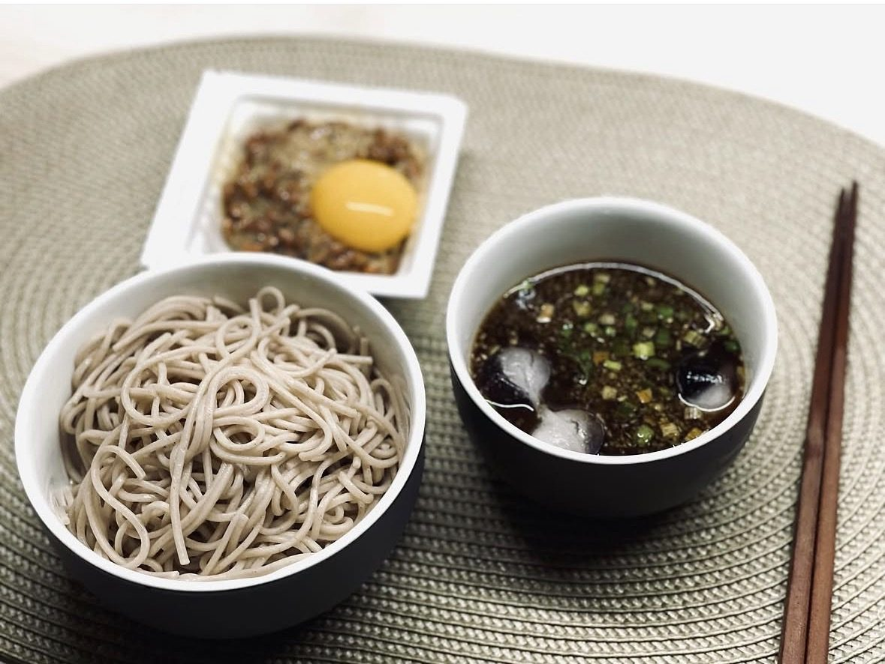

일식 · 15분 · 난이도 하
메밀소바 & 낫또 노른자
불 앞에 오래 서 있기 싫은 여름날의 조합. 차가운 쯔유에 메밀면을 찍고, 낫또에 노른자를 올려 비비는 4분 요리.

- Time
- 15분
- Difficulty
- 하
- Serves
- 1인분
- Equipment
- 1구 인덕션
입맛 없는 여름날 불 앞에 오래 서 있기 싫을 때 만드는 조합이에요. 차가운 쯔유에 메밀면을 찍어 먹고, 옆에는 낫또에 달걀노른자를 올려 비벼 먹어요. 조리 시간은 면 삶는 4분이 전부인데, 단백질까지 챙겨져서 생각보다 든든해요.
Méthode
- 쯔유 차갑게쯔유와 찬물을 섞고 얼음을 넣어 냉장고에 넣어둬요. 면을 삶는 동안 충분히 차가워져요.
- 면 삶기끓는 물에 메밀면을 넣고 포장지 시간대로(보통 4분) 삶아요. 끓어오를 때 찬물 반 컵을 부으면 넘치지 않아요.
- 전분기 빼기삶은 면은 찬물에 비벼 씻어 전분기를 완전히 빼요. 이게 메밀면 식감의 핵심이에요.
- 그릇에 담기물기를 털어 그릇에 담고 김가루를 올려요.
- 낫또 준비낫또는 동봉된 소스와 함께 30번 이상 저어 실이 충분히 나게 한 뒤, 가운데 노른자를 올리고 쪽파를 뿌려요.
- 찍고 비비기쯔유에 쪽파와 와사비를 풀어 면을 찍어 먹고, 낫또는 노른자를 터뜨려 비벼 곁들여요.
Chef's Note — 원룸 팁
낫또 냄새가 신경 쓰이면 쪽파를 넉넉히 넣고, 간장 몇 방울을 더하면 훨씬 부드러워져요.
남은 쯔유는 다음 날 냉우동이나 계란말이 간으로 쓰면 돼요.
4분이면 끝나는 요리지만 그릇 두 개만 정갈하게 담아도 일식집 정식 같은 느낌이 나요. 건강하게 가볍게 먹고 싶은 날 꼭 해보세요.